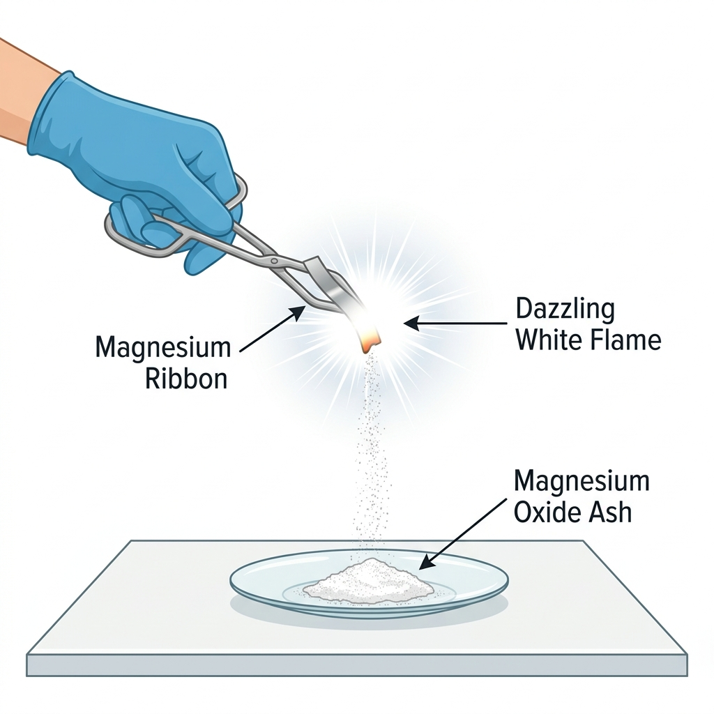

Vardaan Learning Institute
Class 10 Science • Chapter Notes
🌐 vardaanlearning.com
📞 9508841336
Team Vardaan ❤️
CHEMICAL REACTIONS & EQUATIONS
1. The Foundation: Chemical vs. Physical
Every change in our surroundings is either temporary or permanent. For the board exam, you must distinguish
between them based on the formation of new substances.
Concept
Standard Observations (The 5 Indicators)
How do we know a chemical reaction has taken place? Look for these signs:
- Change in State: E.g., Burning of wax (Solid to Gas).
- Change in Colour: E.g., Iron nails in Copper Sulphate (Blue to Green).
- Evolution of Gas: E.g., Zinc + Sulphuric Acid (Hydrogen gas bubbles).
- Change in Temperature: E.g., Quick lime + Water (Exothermic - beaker gets hot).
- Formation of Precipitate: E.g., Barium Chloride + Sodium Sulphate (White solid
forms).
Teacher's Tip: The "Candle" Confusion
Burning of a candle is both physical (melting of wax) and chemical (burning of wax). If
asked in boards, specify this distinction!
2. Representing Reactions: Chemical Equations
A chemical equation is a shorthand representation using symbols and formulas.
Key Knowledge
The 3-Step Representation
- Word Equation: Magnesium + Oxygen $\rightarrow$ Magnesium Oxide
- Skeletal Equation: $Mg + O_2 \rightarrow MgO$ (Unbalanced)
- Balanced Equation: $2Mg + O_2 \rightarrow 2MgO$ (Follows Law of Conservation of
Mass)
Law of Conservation of Mass: Mass can neither be created nor destroyed. Atoms on LHS must = Atoms on RHS.
The "Hit and Trial" Balancing Masterclass
Follow the "Heavy Atom First" rule. Balance the atom with the highest count first.
Note: Here, $H_2O$ is in the form of
steam, hence the $(g)$ state symbol.
Pro-Tip
The State Symbol Legend
Boards give extra credit for correct state symbols. Memorize these shorthand symbols:
- (s): Solid (e.g., metals)
- (l): Liquid (e.g., pure water $H_2O$)
- (g): Gas (e.g., $CO_2$, $H_2$)
- (aq): Aqueous (Substance dissolved in water)
- $\downarrow$: Precipitate (Solid settling down)
- $\uparrow$: Gas evolving (Bubbles/Fumes)
- $\Delta$: Heat supplied (Thermal)
Q & A
Q1. Why is it necessary to balance a skeletal chemical equation? (Board 2018)
Ans: To satisfy the Law of Conservation of Mass, which states that mass
can neither be created nor destroyed in a chemical reaction. Therefore, the total mass of elements present
in the products must be equal to the total mass of elements present in the reactants.
Q & A
Q2. Why should a magnesium ribbon be cleaned with sandpaper before burning in air? (CBSE
2020)
Ans: Magnesium is a reactive metal. When stored in air, it reacts with atmospheric oxygen
and moisture to form a thin dull layer of basic magnesium carbonate. Cleaning with
sandpaper removes this layer, exposing the shiny metal surface so that it can burn completely and properly
in air.
3. NCERT Activity Master-Chart (High Yield)
Board exams love asking about observations from activities. Here is the ultimate memory table followed by
deep-dives into each experiment:
| Activity |
Key Observation & Type |
Chemical Equation |
1.1
Mg Ribbon |
Dazzling white flame; white ash of $MgO$ forms
Combination
|
$2Mg + O_2 \rightarrow 2MgO$ |
1.2
Lead Nitrate + KI
|
Yellow Precipitate of $PbI_2$ forms
Double
Disp. |
$Pb(NO_3)_2 + 2KI \rightarrow PbI_2\downarrow + 2KNO_3$ |
1.3
Zinc + Acid |
Evolution of Hydrogen gas (Pop sound test)
Displacement
|
$Zn + H_2SO_4 \rightarrow ZnSO_4 + H_2\uparrow$ |
1.4
CaO + Water |
Vigorous reaction; beaker becomes hot (Exothermic)
Combination
|
$CaO + H_2O \rightarrow Ca(OH)_2 + \Delta$ |
1.5
Ferrous Sulphate
|
Green crystals → Brown; burning sulphur smell
Decomposition
|
$2FeSO_4 \xrightarrow{\Delta} Fe_2O_3 + SO_2 + SO_3$ |
1.6
Lead Nitrate
Heating |
Brown fumes of $NO_2$; yellow $PbO$ residue
Decomposition
|
$2Pb(NO_3)_2 \xrightarrow{\Delta} 2PbO + 4NO_2 + O_2$ |
1.7
Electrolysis of
Water |
$H_2:O_2$ volume ratio = 2:1 at electrodes
Electrolytic
Decomp. |
$2H_2O \xrightarrow{\text{Electricity}} 2H_2 + O_2$ |
1.8
Silver Chloride
|
White $AgCl$ turns grey in sunlight
Photolytic
Decomp. |
$2AgCl \xrightarrow{\text{Sunlight}} 2Ag + Cl_2$ |
1.9
Iron Nail + CuSO₄
|
Blue → Light Green; brown copper on nail
Displacement
|
$Fe + CuSO_4 \rightarrow FeSO_4 + Cu$ |
1.10
Precipitation
|
White precipitate of $BaSO_4$ forms
Double
Disp. |
$Na_2SO_4 + BaCl_2 \rightarrow BaSO_4\downarrow + 2NaCl$ |
1.11
Copper Oxidation
|
Brown copper turns black Copper Oxide
Oxidation
|
$2Cu + O_2 \xrightarrow{\Delta} 2CuO$ |
Respiration
(Everyday
Example) |
Energy released for life processes
Exothermic
|
$C_6H_{12}O_6 + 6O_2 \rightarrow 6CO_2 + 6H_2O + E$ |
ACTIVITY 1.1: BURNING MAGNESIUM RIBBON
Procedure: Clean Mg ribbon with sandpaper and burn it in air using tongs.
Observation: Dazzling white flame; white ash of magnesium oxide forms.
Equation: $$ 2Mg(s) + O_2(g) \longrightarrow 2MgO(s) $$

Fig:
Dazzling white flame of burning Magnesium ribbon
ACTIVITY 1.2: LEAD NITRATE + POTASSIUM IODIDE
Procedure: Mix aqueous lead nitrate and potassium iodide solutions.
Observation: Yellow precipitate of lead iodide forms ($PbI_2$).
Equation: $$ Pb(NO_3)_2(aq) + 2KI(aq) \longrightarrow PbI_2(s)\downarrow + 2KNO_3(aq) $$
ACTIVITY 1.3: ZINC GRANULES + DILUTE ACID
Procedure: Add zinc granules to dilute $H_2SO_4$ or $HCl$ in a conical flask.
Observation: Gas bubbles form; flask becomes hot (exothermic).
Equation: $$ Zn(s) + H_2SO_4(aq) \longrightarrow ZnSO_4(aq) + H_2(g)\uparrow $$
ACTIVITY 1.4: QUICK LIME + WATER
Procedure: Add water slowly to a small amount of calcium oxide (Quick Lime).
Observation: Vigorous reaction with a hissing sound; beaker becomes very hot.
Equation: $$ CaO(s) + H_2O(l) \longrightarrow Ca(OH)_2(aq) + \text{Heat} $$
ACTIVITY 1.5: HEATING FERROUS SULPHATE
Procedure: Heat green crystals of ferrous sulphate in a dry test tube.
Observation: Colour changes from green to brown ($Fe_2O_3$); smell of burning sulphur.
Equation: $$ 2FeSO_4(s) \xrightarrow{\Delta} Fe_2O_3(s) + SO_2(g) + SO_3(g) $$
ACTIVITY 1.6: HEATING LEAD NITRATE
Procedure: Heat lead nitrate crystals in a test tube.
Observation: Brown fumes of nitrogen dioxide ($NO_2$) evolve.
Equation: $$ 2Pb(NO_3)_2(s) \xrightarrow{\Delta} 2PbO(s) + 4NO_2(g) + O_2(g) $$
ACTIVITY 1.7: ELECTROLYSIS OF WATER
Procedure: Pass electricity through acidified water.
Observation: Volume of hydrogen collected at cathode is double that of oxygen at anode.
Equation: $$ 2H_2O(l) \xrightarrow{\text{Electricity}} 2H_2(g) + O_2(g) $$
Critical Observations
1. The 2:1 Ratio (Activity 1.7)
During electrolysis of water, Hydrogen gas is collected at the
Cathode and Oxygen at the Anode. The volume of $H_2$ is double
that of $O_2$ because one molecule of water ($H_2O$) contains two atoms of Hydrogen for every
one atom of Oxygen.
2. The 'Pop' Sound (H₂ Test)
To test for Hydrogen gas ($H_2$), bring a burning candle near the
mouth of the test tube. The gas burns with a pop
sound.
ACTIVITY 1.8: PHOTOLYTIC DECOMPOSITION
Procedure: Keep silver chloride ($AgCl$) in sunlight.
Observation: White $AgCl$ turns grey due to formation of silver metal.
Equation: $$ 2AgCl(s) \xrightarrow{\text{Sunlight}} 2Ag(s) + Cl_2(g) $$
ACTIVITY 1.9: IRON NAILS IN COPPER SULPHATE
Procedure: Dip iron nails in blue $CuSO_4$ solution.
Observation: Blue solution fades to light green; nails turn brownish.
Equation: $$ Fe(s) + CuSO_4(aq) \longrightarrow FeSO_4(aq) + Cu(s) $$
ACTIVITY 1.10: PRECIPITATION REACTION
Procedure: Mix sodium sulphate and barium chloride solutions.
Observation: White precipitate of $BaSO_4$ forms instantly.
Equation: $ Na_2SO_4(aq) + BaCl_2(aq) \longrightarrow BaSO_4(s)\downarrow + 2NaCl(aq) $
ACTIVITY 1.11: OXIDATION OF COPPER
Procedure: Heat copper powder in a china dish.
Observation: Brown copper turns black Copper Oxide ($CuO$).
Equation: $$ 2Cu(s) + O_2(g) \xrightarrow{\Delta} 2CuO(s) $$
4. Types of Reactions (Simplified Logic)
Classification
A. Combination Reaction ($A + B \rightarrow C$)
Reactants merge into one. Commonly Exothermic.
Crucial Board Question: Whitewashing.
Quick Lime + Water $\rightarrow$ Slaked Lime ($CaO + H_2O \rightarrow Ca(OH)_2$)
Slaked Lime + $CO_2$ $\rightarrow$ Calcium Carbonate ($Ca(OH)_2 + CO_2 \rightarrow CaCO_3 + H_2O$)
The shiny finish comes from $CaCO_3$ after 2-3 days.
Q & A
Q3. Distinguish between Exothermic and Endothermic reactions with examples. (CBSE 2017)
Ans:
• Exothermic Reactions: Reactions in which heat is released along with products. E.g.,
Burning of natural gas: $CH_4 + 2O_2 \rightarrow CO_2 + 2H_2O + \text{Heat}$.
• Endothermic Reactions: Reactions in which energy is absorbed. E.g., Decomposition of
Calcium Carbonate: $CaCO_3 \xrightarrow{\Delta} CaO + CO_2$.
HOTS Challenge
Q4. A substance X, which is an oxide of a group 2 element, is used intensively in the cement
industry. This element is also present in bones. On treatment with water, it forms a solution which
turns red litmus blue. Identify X and the reaction involved.
Ans:
• X is Calcium Oxide ($CaO$), also known as Quicklime.
• The element is Calcium (Group 2, present in bones).
• Reaction: $CaO(s) + H_2O(l) \rightarrow Ca(OH)_2(aq) + \text{Heat}$.
• $Ca(OH)_2$ (Slaked Lime) is basic, hence it turns red litmus blue.
Q & A
Q5. Explain with a chemical equation why respiration is considered an exothermic reaction. (CBSE
2019, 2022)
Ans: During respiration, glucose obtained from digestion of food reacts with oxygen inside
body cells to produce carbon dioxide, water, and releases energy. Since energy is released
in the process, respiration is an exothermic reaction.
$C_6H_{12}O_6 + 6O_2 \rightarrow 6CO_2 + 6H_2O + \text{Energy}$
Q & A
Q6. Why is photosynthesis considered an endothermic reaction? Write its equation. (Board
2022)
Ans: In photosynthesis, green plants absorb energy from sunlight to
convert carbon dioxide and water into glucose and oxygen. Since energy is absorbed, it is an endothermic
reaction.
$6CO_2 + 12H_2O \xrightarrow{\text{Sunlight/Chlorophyll}} C_6H_{12}O_6 + 6O_2 + 6H_2O$
Classification
B. Decomposition Reaction ($C \rightarrow A + B$)
The "Opposite of Combination". Commonly Endothermic.
- Thermal: Heat ($CaCO_3 \rightarrow CaO + CO_2$)
- Electrolytic: Electricity ($2H_2O \rightarrow 2H_2 + O_2$)
- Photolytic: Sunlight ($2AgBr \rightarrow 2Ag + Br_2$)
Q & A
Q7. A student heats Lead Nitrate powder in a test tube. (CBSE 2023)
(a) What colour are the fumes evolved?
(b) Write the balanced chemical equation.
(c) Name the type of chemical reaction.
Ans:
(a) Brown fumes of Nitrogen Dioxide ($NO_2$) are evolved. A yellow residue of Lead Oxide
($PbO$) remains.
(b) $2Pb(NO_3)_2 \xrightarrow{\Delta} 2PbO + 4NO_2 + O_2$
(c) Thermal Decomposition Reaction.
Q & A
Q8. Why are decomposition reactions called the opposite of combination reactions?
(NCERT)
Ans: In a combination reaction, two or more substances combine to form a
single product ($A + B \rightarrow C$). In a decomposition reaction, a single reactant
breaks down to give two or more simpler products ($C \rightarrow A + B$). Thus, they are functionally
opposite.
Q & A
Q9. Why is Silver Chloride stored in dark-coloured bottles? (CBSE 2019)
Ans: Silver chloride ($AgCl$) is light-sensitive. In the presence of
sunlight, it undergoes photolytic decomposition to form silver metal and chlorine gas ($2AgCl \rightarrow
2Ag + Cl_2$). Dark bottles block sunlight to prevent this decomposition.
HOTS Challenge
Q10. A white salt 'A' on heating gives brown fumes of gas 'B' and a yellow residue 'C'. When an
aqueous solution of 'A' is mixed with Potassium Iodide, a yellow precipitate 'D' is formed. Identify A,
B, C, and D.
Ans:
• A: Lead Nitrate [$Pb(NO_3)_2$]
• B: Nitrogen Dioxide [$NO_2$] (Brown fumes)
• C: Lead Oxide [$PbO$] (Yellow residue)
• D: Lead Iodide [$PbI_2$] (Yellow precipitate)
Classification
C. Displacement Reaction ($A + BC \rightarrow AC + B$)
Based on Reactivity Series. A stronger metal kicks out a weaker one.
Example: $Zn(s) + CuSO_4(aq) \rightarrow ZnSO_4(aq) + Cu(s)$
Zinc is more reactive than Copper.
Q & A
Q11. Why does the colour of copper sulphate solution change when an iron nail is kept immersed in
it? (CBSE 2018)
Ans: Iron is higher than copper in the Reactivity Series. It therefore
displaces copper from its solution. The blue colour of copper sulphate ($CuSO_4$) fades and turns light
green as Ferrous Sulphate ($FeSO_4$) forms. The nail gets a reddish-brown copper
coating.
$Fe(s) + CuSO_4(aq) \rightarrow FeSO_4(aq) + Cu(s)$
HOTS Challenge
Q12. On adding dilute HCl to copper oxide powder, the solution becomes blue-green. Identify the new
compound formed and write the balanced equation.
Ans: The blue-green color is due to the formation of Copper(II) Chloride
($CuCl_2$).
$CuO(s) + 2HCl(aq) \rightarrow CuCl_2(aq) + H_2O(l)$
Classification
D. Double Displacement ($AB + CD \rightarrow AD + CB$)
Exchange of ions. Usually results in a Precipitate.
Standard Example: $Na_2SO_4 + BaCl_2 \rightarrow BaSO_4\downarrow + 2NaCl$ (White ppt of
Barium Sulphate).
5. Redox Reactions (Oxidation & Reduction)
This is where most students lose marks. Use the "Oxygen-Hydrogen Rule".
Concept
Identifying the Agents
| Process |
Oxygen |
Hydrogen |
| Oxidation |
Gain (+) |
Loss (-) |
| Reduction |
Loss (-) |
Gain (+) |
Example Equation: $MnO_2 + 4HCl \rightarrow MnCl_2 + 2H_2O + Cl_2$
- $MnO_2 \rightarrow MnCl_2$: Reduction (Oxygen removed)
- $HCl \rightarrow Cl_2$: Oxidation (Hydrogen removed)
- Oxidizing Agent: $MnO_2$ (The one that gets reduced)
- Reducing Agent: $HCl$ (The one that gets oxidized)
Q & A
Q13. In $MnO_2 + 4HCl \rightarrow MnCl_2 + 2H_2O + Cl_2$, identify the: (a) Substance oxidised (b)
Substance reduced (c) Oxidising Agent (d) Reducing Agent. (CBSE Board)
Ans:
(a) Substance Oxidised: $HCl$ — Hydrogen is removed from $HCl$, it loses hydrogen
(oxidised).
(b) Substance Reduced: $MnO_2$ — Oxygen is removed from $MnO_2$ (reduced).
(c) Oxidising Agent: $MnO_2$ (it gets reduced itself).
(d) Reducing Agent: $HCl$ (it gets oxidised itself).
Mnemonic: OIL RIG
Oxidation Is Loss (of Electrons) |
Reduction Is Gain (of Electrons).
6. Everyday Effects of Oxidation
Board Favorite
Corrosion (Destruction of Metals)
- Iron: Rust ($Fe_2O_3 \cdot xH_2O$) - Reddish Brown.
- Silver: Black Coating ($Ag_2S$) due to sulfur in air.
- Copper: Green Coating (Basic Copper Carbonate) - $CuCO_3 \cdot Cu(OH)_2$.
ACTIVITY 1.11: OXIDATION OF COPPER
Observation: Heating copper powder in a china dish turns it black.
Reason: Oxygen is added to copper to form Copper (II) Oxide.
Equation: $2Cu + O_2 \xrightarrow{\Delta} 2CuO$ (Black)
To reverse: Pass Hydrogen gas over hot CuO: $CuO + H_2 \rightarrow Cu + H_2O$ (Returns to
brown).
Q & A
Q14. A shiny brown element X on heating in air becomes a black compound Y. Identify X and Y, and
write the balanced equation. (NCERT Exemplar / HOTS)
Ans: X is Copper ($Cu$) and Y is Copper(II) Oxide
($CuO$).
$2Cu(s) + O_2(g) \xrightarrow{\Delta} 2CuO(s)$ — This is an oxidation reaction.
When Hydrogen gas is passed over the hot black $CuO$, it returns to shiny brown copper: $CuO + H_2
\rightarrow Cu + H_2O$ (Reduction).
Board Favorite
Rancidity (Spoiling of Food)
Oxidation of fats/oils leads to bad smell/taste.
Prevention: Flush packets with Nitrogen gas (Inert gas), use airtight containers, add
Antioxidants.
Q & A
Q15. Why are packets of potato chips flushed with Nitrogen gas? (CBSE 2021)
Ans: Potato chips contain fats and oils. When they come in contact with oxygen in the air,
they get oxidised and become rancid, leading to a bad smell and taste.
Nitrogen is an inert gas; it replaces oxygen and prevents oxidation, keeping the chips
fresh.
7. Board Exam Scenario Masterclass
Case Study Logic: Why does the color of copper sulphate change when iron is dipped?
Answer: Because iron is more reactive than copper (refer reactivity series), it
displaces copper from its salt solution to form Ferrous Sulphate ($FeSO_4$), which is light green in
color.
Key Knowledge
Top 3 Reaction Balancings for Boards:
- $2Pb(NO_3)_2 \xrightarrow{\Delta} 2PbO + 4NO_2 + O_2$ (Thermal Decomposition of Lead Nitrate)
- $6CO_2 + 12H_2O \xrightarrow{Sunlight/Chlorophyll} C_6H_{12}O_6 + 6O_2 + 6H_2O$ (Photosynthesis)
- $CH_4 + 2O_2 \rightarrow CO_2 + 2H_2O + \text{Energy}$ (Burning of Methane)